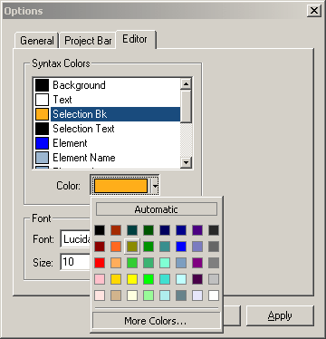

Syntax Colors
- Configure the color for each type of element/keyword that can be parsed.
Font
- Configure the Font name and Font size of the text in the editor.
Below is a screenshot of the Editor Tab in Options Dialog:
